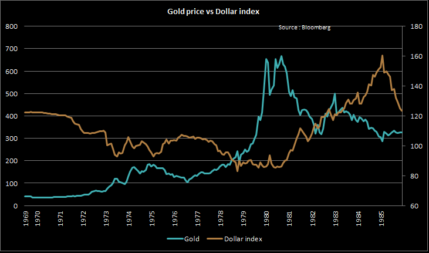

세계 2차대전이 끝나고 유럽대륙이 성장을 지속하는 과정에서 미국은 유럽으로 부터의 수입이 증가하게 되었고, 이에따라 미국 달러의 국제화가 본격적으로 진행되었다. 1969년까지의 베 트남 전쟁은 미국의 재정적자를 크게 증가시키는 결과를 가져왔다. 유럽국가들은 미국 달러의 가치 하락을 우려하여 달러를 금으로 교환하려는 시도가 프랑스로 부터 시작되었고, 이에 미국은 1971년 달러와 금과의 관계를 일방적으로 단절함으로서 금본위제의 종말을 선언하였다. 1968년 부터 시장은 미국 달러의 확장을 감지하였고 금 가격대비 달러의 가치는 하락하기 시작하여 1971년 금본위제의 폐지 선언과 함께 지속적으로 하향한다. 